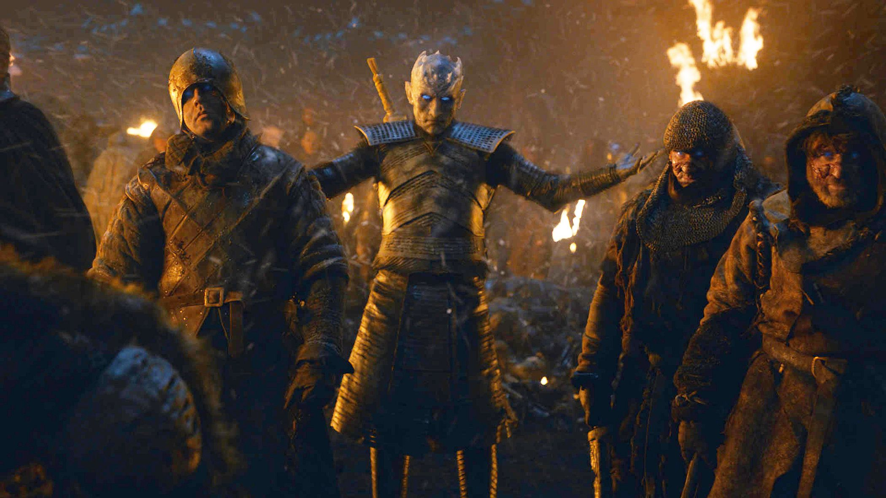
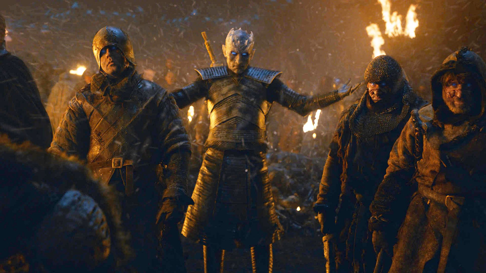

Website Description
The purpose of this website is for peopler who are new to the Game of Thrones series to become familiarized with the characters and history. The site is also meant to clear up any confusion as the characters and history can become quite complex. Game of Thrones is an HBO series that tells the story of a medieval country's civil war. The series, which premiered in April 2011, is set on the fictional continents of Westeros and Essos in a world where seasons stretch on for years. When the story begins, a decade-long summer is ending, and winter looms as characters battle to claim the "Iron Throne," the seat of the king of the Seven Kingdoms, the regime that rules all but the northern tip of Westeros. In show parlance, "sit on the Iron Throne" is a metonym equivalent to "rule Westeros."
 
